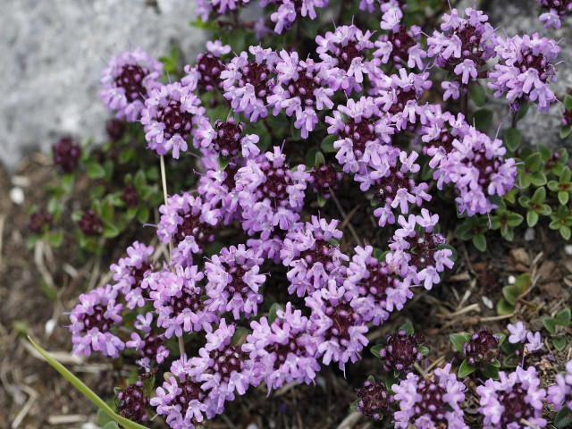

Pepolino (Serpillo): uso tradizionale, proprietà e avvertenze
Thymus serpyllum

Il nome deriva dal greco 'herpyllos' (strisciare), per il portamento prostrato. Era già citato da Virgilio.
Proprietà attribuite dalla tradizione
- Tradizionalmente attribuito ad azioni antisettica, balsamica ed espettorante
- Tradizionalmente attribuito ad azioni antispasmodica e carminativa
- Oggetto di studi per l'attività antibatterica e antiossidante dell'olio essenziale (timolo, carvacrolo)
Uso tradizionale
Tradizionalmente come infuso per digestione e flatulenza; coadiuvante nelle bronchiti. L'olio essenziale è usato per uso esterno, sempre diluito.
Avvertenze e controindicazioni
L'infuso non ha particolari controindicazioni oltre alla sensibilità individuale. L'olio essenziale va diluito e non assunto internamente senza controllo. Sconsigliato in gravidanza e allattamento senza parere medico.
Avvertenza. Le informazioni di questa pagina hanno scopo divulgativo e non sostituiscono il parere del medico o di un professionista sanitario. Non usare le erbe per curare o sostituire una terapia. In gravidanza, allattamento, in presenza di patologie o di farmaci in corso, consulta il medico prima dell'uso.
Le proprietà sono riportate come attribuzioni tradizionali o come oggetto di studi, senza valore di cura.